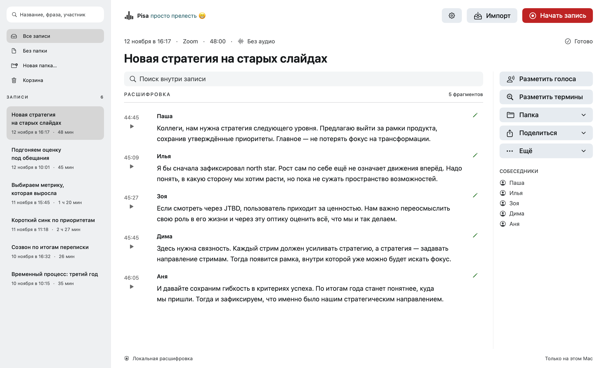

Запись и импорт
Pisa записывает микрофон и звук собеседников на отдельные дорожки. Готовые записи можно импортировать в форматах M4A, WAV и MP3.
Pisa сохраняет разговоры и расшифровывает их прямо на вашем Mac. Находите нужные реплики и возвращайтесь к договорённостям после встречи.
Скачать для MacMac с Apple Silicon · macOS 15 и новее

Pisa записывает микрофон и звук собеседников на отдельные дорожки. Готовые записи можно импортировать в форматах M4A, WAV и MP3.
Читайте расшифровку с именами участников и отметками времени. Переслушивайте фрагменты, правьте текст и добавляйте имена и термины в словарь.
Ищите по названию, фразе или имени участника. Раскладывайте встречи по папкам, чтобы держать записи одного проекта вместе.
Сохраняйте расшифровку или настройте автоэкспорт в папку, например в хранилище Obsidian. При правках Pisa обновит файл.
Подключите своего ИИ‑ассистента к Pisa через MCP. Он сможет искать по библиотеке и ссылаться на реплики, которые можно открыть в Pisa.
Как подключить MCPПримеры запросов к ассистенту
Распознавание работает на Mac. После загрузки моделей для расшифровки интернет не нужен.
Исходный код на GitHubDMG распространяется без нотаризации Apple. Для первого запуска выполните команду из второго шага.
Инструкция и HomebrewОткройте образ и перетащите Pisa в «Программы»
Для Pisa, скачанной из официального репозитория, выполните команду в Терминале
xattr -dr com.apple.quarantine "/Applications/Pisa.app"
Запустите Pisa из «Программ» и загрузите модели при первой настройке
Pisa автоматически загружает обновления и устанавливает их при выходе. Это можно изменить в настройках.